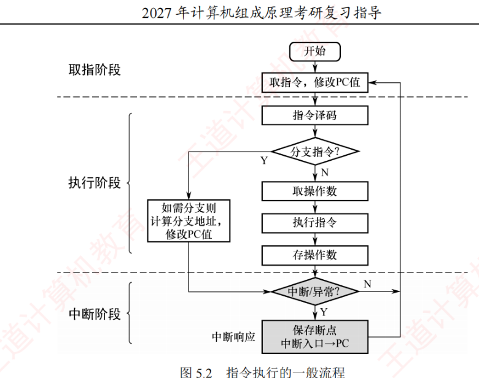
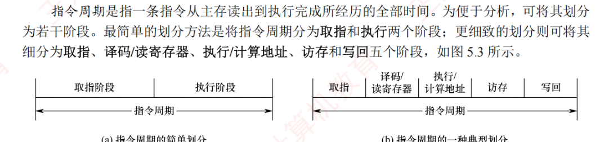

5.2 指令执行过程
一条指令从取出到执行完毕要经历哪些步骤？这些步骤靠什么时间基准来协调？本节回答这两个问题：先看指令执行的一般流程（5.2.1），再看 CPU 如何用时序控制各操作的先后顺序（5.2.2），然后引入指令周期的概念与常见划分方法（5.2.3），最后对比单周期、多周期、流水线三种处理器执行模型（5.2.4）。
5.2.1指令执行的一般流程
计算机执行程序的本质，是控制器依据指令序列协调各功能部件协同工作的过程。CPU 启动后，将持续循环执行「取指令」与「执行指令」两个基本操作。每条指令执行完毕后，还要进行中断与异常检测，以确保系统能够及时响应外部事件或内部异常。指令执行的一般流程如图 5.2 所示。

具体执行的基本流程如下：
首先，CPU 以程序计数器（PC）的当前值为地址，从主存中取出一条指令；与此同时，PC 通常被自动更新为下一条顺序指令的地址（增量等于当前指令的长度），为后续取指做准备。
随后，进入译码与执行阶段，CPU 对指令进行译码，识别其类型，并据此确定执行路径。为简化分析，可将指令分为分支指令与非分支指令两类：
- 为分支指令时，在执行阶段判断分支条件：条件满足时，PC 将被更新为分支目标地址；
- 为非分支指令时，依次完成取操作数、执行运算、写回结果等基本操作。
无论执行哪类指令，执行完成后，CPU 均需要进行中断与异常检测：
- 未检测到中断或异常时，继续以更新后的 PC 地址取指，进入下一条指令的执行阶段；
- 检测到中断或异常时，进入中断响应阶段：屏蔽可能中断，保存返回地址（通常为下一条指令地址或当前指令地址，具体取决于中断类型），并将 PC 设置为相应中断服务程序的入口地址，随后转移到该服务程序。关于中断机制的介绍，见 5.5 节。
5.2.2CPU 的时序控制
计算机的时序控制用于协调指令执行过程中各操作的先后顺序。CPU 必须按照精确的时序产生控制信号，以协调不同指令在操作步骤和时间上的差异。
时钟信号是时序控制的基础，通常由机器内部的振荡源（如晶振）产生，经整形和分频后形成供全机同步使用的节拍信号。时钟周期的长度由数据通路中相邻状态单元之间组合逻辑的最大传播延迟决定，以确保信号在下一个时钟边沿到来前稳定（关于数据通路的介绍，见 5.3 节）。
早期计算机采用「机器周期—节拍—脉冲」三级时序系统：一个指令周期被划分为若干机器周期（如取指、取操作数、执行、中断响应等），每个机器周期又细分为多个节拍，必要时在节拍内插入工作脉冲，以实现更精细的时序控制。由于不同指令的功能复杂度各异，所需的机器周期数及各周期内的节拍数均可不同，从而支持多样化的需求。
随着高速缓存的广泛应用和芯片集成度的显著提升，现代处理器已大幅简化时序结构，「机器周期」这一概念逐渐淡化，CPU 内部由统一的系统时钟直接驱动，一个时钟周期即对应一个节拍，绝大多数指令可在若干时钟周期内高效完成。
5.2.3指令周期的基本概念
指令周期是指一条指令从主存取出到执行完成所经历的全部时间。为便于分析，可将其划分为若干阶段：最简单的划分方法是将指令周期分为取指和执行两个阶段；更细致的划分则可将其细分为取指、译码/读寄存器、执行/计算地址、访存和写回五个阶段，如图 5.3 所示。

传统上还常把指令周期细分为四种周期：取指周期、间址周期、执行周期和中断周期，其微操作流程如下（与图 5.2 的「取指阶段→执行阶段→中断阶段」口径相通，间址周期对应「取操作数」环节中的间接寻址场景）：
- 取指周期：以 PC 的内容为地址访问主存，取出指令送入 IR，并完成译码与 PC 增量。典型微操作序列（设访存读出数据到达 MDR 需若干个时钟周期）：
(PC) → MAR // 指令地址送存储器地址寄存器 1 → R // 发出主存读命令 M(MAR) → MDR // 从主存读出指令送数据寄存器 (MDR) → IR // 指令送入指令寄存器 OP(IR) → CU // 操作码送控制单元译码 (PC) + 1 → PC // PC 增量，形成下一条指令地址 - 间址周期：用于间接寻址，其任务是取操作数的有效地址——间址周期结束后，MDR 中的内容即为操作数地址。典型微操作序列：
Ad(IR) → MAR // 指令中的地址码（形式地址）送 MAR 1 → R // 发出主存读命令 M(MAR) → MDR // 读出有效地址 (MDR) → Ad(IR) // 有效地址回送至指令的地址码字段 - 执行周期：依指令类型而异——算术逻辑指令在运算器中完成运算，访存指令读/写主存数据，转移指令修改 PC。
- 中断周期：响应中断时保存断点并转入服务程序。典型微操作序列（把断点压入主存指定单元或栈顶）：
(PC) → MAR // 断点（返回地址）送主存地址寄存器 1 → W // 发出主存写命令 (PC) → MDR // 断点送主存数据寄存器 (MDR) → M(MAR) // 断点存入主存指定单元（或栈顶） 中断服务程序入口地址 → PC // 转向中断服务程序
五个功能段的典型动作如下：
- 取指（IF）：CPU 根据 PC 的值，从主存（或指令 Cache）中读取下一条指令，并将其送入 IR。同时，PC 被更新为下一条指令的地址。顺序执行时，PC 增加当前指令的长度；若为变长指令，则需在取指阶段初步解析其格式，以确定长度；若发生分支，则其目标地址将在后续阶段计算，并据此更新 PC；
- 译码/读寄存器（ID）：对 IR 中的指令进行译码，识别操作码和寻址方式，并从寄存器堆中读取所需的操作数。此阶段可能包含基址寄存器与偏移量，为后续地址计算做准备。立即数也在本阶段提取；
- 执行/计算地址（EX）：根据指令类型执行相应的操作：算术逻辑指令，由 ALU 完成运算；访存类指令（如 LOAD/STORE），计算数据在主存中的有效地址；分支指令，计算目标地址并判断是否转移。此外，运算结果的状态（如零标志、进位等）通常在此阶段生成并暂存；
- 访存（MEM）：若指令需要访问主存储器（如加载数据或存储结果），则在此阶段通过数据 Cache 或主存完成读写。寄存器—寄存器类指令不涉及此阶段；
- 写回（WB）：将最终结果写回寄存器堆。结果可能来自 ALU 的运算输出（执行阶段）或从存储器读取的数据（访存阶段）。写回完成后，该指令的执行宣告结束。
需要注意的是，指令周期的具体划分因处理器架构而异，上述划分为一种典型示例，实际系统还可能包含中断响应等阶段，此时 CPU 会保存断点并转移至服务程序。
由于指令功能和格式的不同，不同指令的指令周期长度并不固定。根据实现方式，可分为定长指令周期（所有指令的周期长度相同）和变长指令周期（不同指令包含的时钟周期数可变）。现代计算机普遍采用基于时钟信号驱动的变长指令周期，以提高执行效率。
【例】若某机主频为 200MHz，每个指令周期平均为 2.5 个 CPU 周期，每个 CPU 周期平均包括 2 个主频周期。1）该机平均指令执行速度为多少 MIPS？2）若主频不变，但每条指令平均包括 5 个 CPU 周期，每个 CPU 周期又包含 4 个主频周期，则平均指令执行速度又为多少 MIPS？3）由此可得出什么结论？
解：
1）主频为 200MHz，所以主频周期 = \(1/200\text{MHz} = 0.005\mu s\)。每个指令周期平均为 2.5 个 CPU 周期，每个 CPU 周期平均包括 2 个主频周期，所以一条指令的执行时间 = \(2 \times 2.5 \times 0.005\mu s = 0.025\mu s\)。该机平均指令执行速度 = \(1/0.025\) MIPS = 40 MIPS。
2）每条指令平均包括 5 个 CPU 周期，每个 CPU 周期又包含 4 个主频周期，所以一条指令的执行时间 = \(4 \times 5 \times 0.005\mu s = 0.1\mu s\)。该机平均指令执行速度 = \(1/0.1 = 10\) MIPS。
3）由此可知，指令的复杂程度会影响平均指令执行速度——主频相同，指令平均所需周期数翻倍，速度就从 40MIPS 掉到 10MIPS。
5.2.4处理器指令执行模型
一个指令周期通常由若干依次执行的步骤组成，各步骤协同完成指令的全部功能。不同处理器对这些步骤的组织方式存在显著差异，主要可分为以下三类模型。
1. 单周期处理器
为所有指令分配相同的执行时间，每条指令在一个时钟周期内完成（CPI = 1）。指令之间严格串行执行，即下一条指令必须等前一条指令完全结束后才能启动。因此，时钟周期的长度由执行时间最长的指令决定。对于原本可在更短时间内完成的指令，也要占用整个周期，导致硬件资源在部分时间内空闲，限制了系统的整体性能。
2. 多周期处理器
根据指令类型动态分配执行周期数，不同指令可占用不同数量的时钟周期（各指令的 CPI 不同，平均 CPI 通常大于 1）。该方案不要求所有指令具有相同的执行时间，从而提高了时钟频率和资源利用率。但是，指令之间仍是串行执行的，无法实现重叠处理。
3. 流水线处理器
采用指令级并行策略，目标是在每个时钟周期完成一条指令的吞吐（理想情况下 CPI = 1）。其实现机制是：每个时钟周期启动一条新指令，使多条指令在流水线中重叠执行，各自处于不同的执行阶段（如取指、译码、执行、写回等）。尽管单条指令从开始到完成仍需要多个周期、执行时间并未减少，但整体吞吐率显著提高，大幅提升了处理器效率。